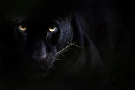
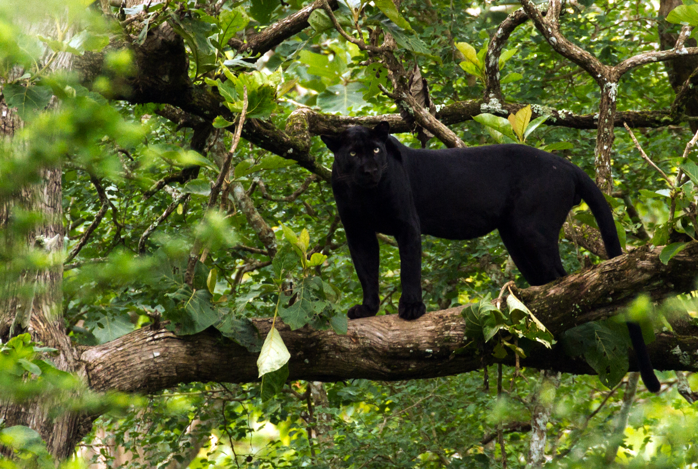
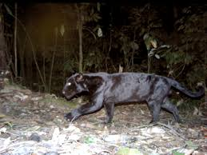
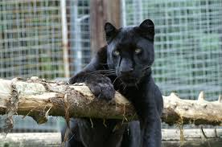
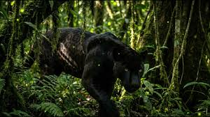

Introduction to the Black Panther
The black panther, scientifically known as Panthera pardus in its melanistic form, is not a distinct species but a leopard with a genetic mutation that causes excess melanin production, resulting in a sleek, black coat. Often shrouded in mystery and myth, these elusive predators are symbols of stealth and power in wildlife. Found across Africa, Asia, and parts of the Americas, black panthers are apex predators that play a crucial role in maintaining ecological balance.
Despite their intimidating appearance, black panthers are solitary and nocturnal, blending seamlessly into their environments. This page explores their world, highlighting the importance of conservation to protect these magnificent creatures from habitat loss and human encroachment.

Habitat and Range
Black panthers inhabit a variety of ecosystems, from dense rainforests to savannas and mountainous regions. In Africa, they are commonly found in countries like Kenya and South Africa, while in Asia, they roam the jungles of India and Southeast Asia. Their adaptability allows them to thrive in diverse climates, but deforestation and urbanization threaten their homes.
These cats prefer areas with ample cover for hunting, such as thick vegetation or rocky terrains. Conservation efforts focus on protecting these habitats to ensure the survival of black panthers and the biodiversity they support.


Behavior and Lifestyle
Black panthers are solitary hunters, relying on stealth and strength to ambush prey. They are primarily nocturnal, using their keen senses—sharp vision, acute hearing, and a powerful sense of smell—to navigate and hunt. Their diet includes deer, monkeys, and smaller mammals, and they can take down prey much larger than themselves.
These predators are territorial, marking their ranges with scent and vocalizations. Females raise cubs alone, teaching them hunting skills. Despite their fierce reputation, black panthers are more likely to avoid humans than confront them, emphasizing the need for coexistence.

Conservation Efforts
Black panthers face significant threats from habitat destruction, poaching, and human-wildlife conflict. As an endangered species in many regions, conservation organizations work tirelessly to protect them through anti-poaching patrols, habitat restoration, and community education.
Supporting wildlife sanctuaries and sustainable practices can help preserve these iconic animals. Learn more about how you can contribute to their protection by visiting organizations like the World Wildlife Fund (WWF).

Multimedia Showcase
Experience the black panther through immersive media. Below, explore a documentary clip, a custom-recorded roar, and ambient sounds from the wild.
YouTube Documentary Clip
Watch this engaging documentary clip about black panthers.
Custom Video
A custom video.
Ambient Sounds
Listen to the sounds of a black panther in its habitat.